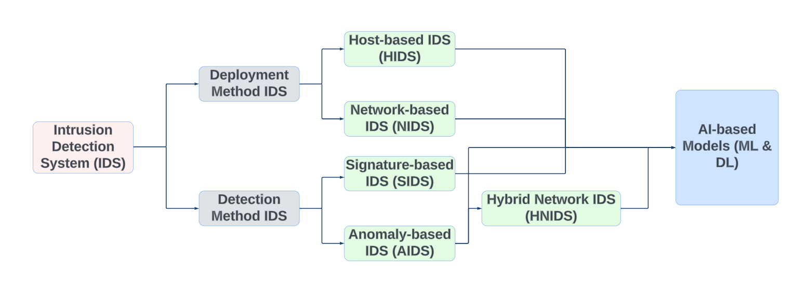
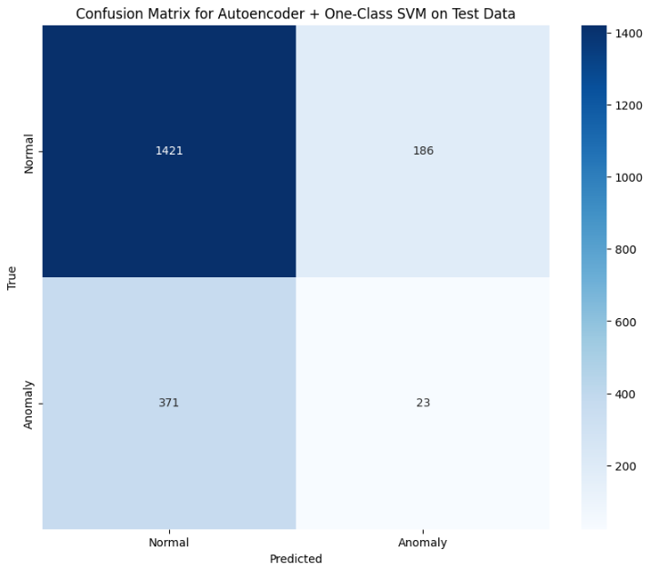
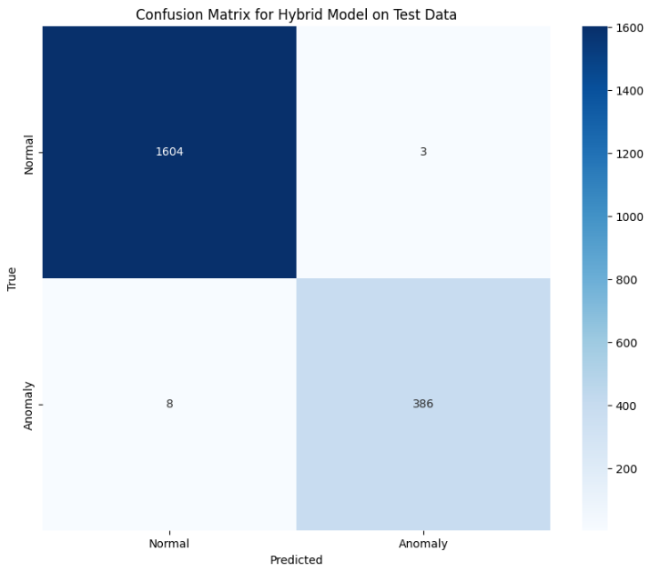
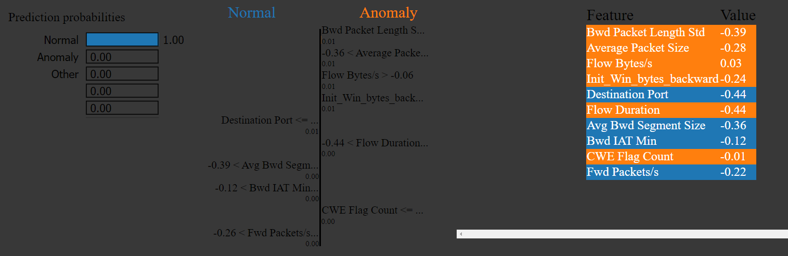
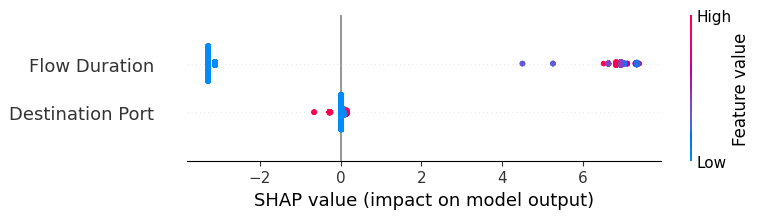

XAI Intrusion Detection System
The Problem
Network intrusion detection systems (IDS) have a trust problem. Signature-based systems are interpretable but blind to novel attacks. Anomaly-based systems can catch the unknown but are opaque — a security analyst facing a high-confidence alert with no explanation cannot act on it decisively or audit it after the fact.
The question I wanted to answer was: can a hybrid system combine the coverage of anomaly detection with the explainability of signature-based detection, and can it then justify each decision in human-readable terms?
My Approach
I designed a two-layer architecture. The first layer uses unsupervised anomaly detection — an Autoencoder combined with a One-Class SVM — to flag network flows that deviate from a learned normal baseline. The second layer applies a supervised Random Forest classifier to those flagged flows, categorising them by known attack type.
Both layers feed into an explainability wrapper: SHAP provides global feature importance across the full test set, while LIME explains individual predictions locally. The result is a system that flags, classifies, and then justifies — all three in one pipeline.
The dataset is CIC-IDS-2017, a standard benchmark from the Canadian Institute for Cybersecurity containing real-world network traffic with labelled attacks including DDoS, port scans, web attacks, and brute force.
What I Built
Preprocessing pipeline: Raw PCAP-derived CSVs required normalization, label encoding, feature selection, and class-imbalance handling before any model could be trained reliably. Infinite and NaN values from flow calculations were cleaned, and features were standardized.
Autoencoder + One-Class SVM: The Autoencoder learned a compressed representation of benign traffic; flows with high reconstruction error were flagged as anomalous. One-Class SVM added a second boundary, tightening the definition of normal. Together they formed the unsupervised detection layer.

Fig 1 — IDS architecture: anomaly-based and signature-based layers unified into a hybrid system.
Random Forest classifier: Trained on labelled flows to classify attack type. This supervised layer gives the system memory — it can recognise previously seen attack patterns with high confidence.
SHAP + LIME integration: SHAP TreeExplainer computed global feature attribution across the test set. LIME wrapped the Autoencoder to produce local perturbation-based explanations for individual flagged flows. Both outputs were visualised to make model reasoning legible.
Results
Performance varied meaningfully across models, which itself was informative.

Fig 2 — Autoencoder + One-Class SVM: significant false negatives on the imbalanced dataset. Anomaly detection alone is not enough.
Fig 3 — Random Forest: strong classification performance on known attack categories using supervised labels.

Fig 4 — Hybrid model: the best result overall, combining the anomaly layer's coverage with the classifier's precision.

Fig 5 — LIME output: local feature attribution for a single anomalous prediction, showing which flow features drove the decision.

Fig 6 — SHAP summary plot: global view of feature importance and directional impact across the test set.
What I Learned
The biggest lesson was about class imbalance. The CIC-IDS-2017 dataset is heavily skewed toward benign traffic, and unsupervised models trained on reconstruction error are particularly sensitive to this — they tend to absorb common attack patterns into their definition of "normal." Resampling and threshold tuning matter enormously.
I also learned the practical limits of LIME in this domain. Perturbation-based explanations work best when the feature space is meaningful to the end user — network flow statistics like "Fwd Packet Length Max" are not intuitive, which limits how useful LIME's output is without domain translation. SHAP's global view was more actionable in practice.
The hybrid approach confirmed that no single model dominates across all threat types. Layering detection methods with explainability is not just academically interesting — it reflects how real security operations centres need to work.